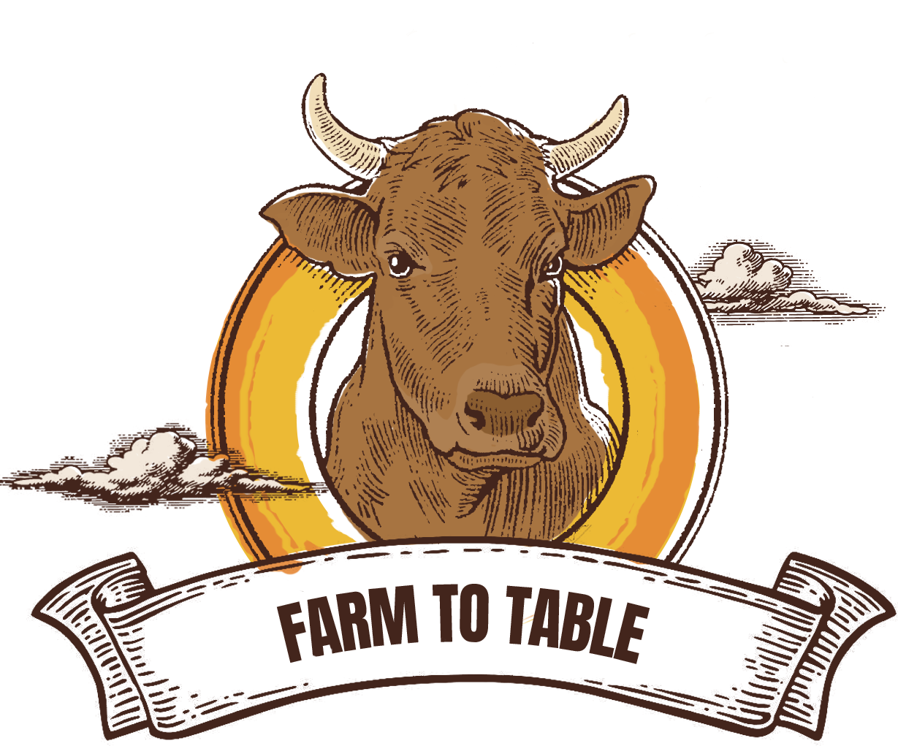
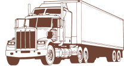

Discover the environmental impacts of mass beef
consumption, from the day a cow is born ot the steak
it would one day become.
♦ ON THE FARM ♦
For each beefy pound on a cow's body,
50.7 lbs of CO2 are emitted and 1799 gallons
of water are consumed. That's a whole
lot of gas and water.
RAISE 'EM WELL
♦ SLAUGHTERHOUSE ♦
Take a look inside a food processing
centre: home to all slicing, dicing, and plastic
packaging. Beware, slaughterhouse wastes
may pollute local waters!
KILL IT 'N' SPILL IT
♦ TRANSPORTATION ♦
Ever wanted to take a cross-country road trip?
Escape the farm in an 18-wheeler truck with
your bovine friends, while leaving behind a
colossal trail of CO2!

♦ DINNER TABLE ♦
This meal is brought to you by CO2 emissions,
water pollution, and deforestation.
IT'S DINNER TIME